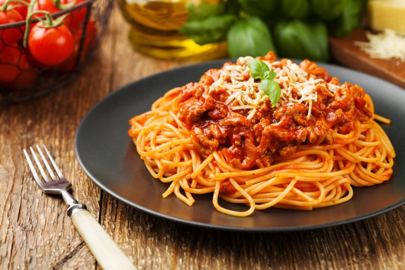

Спагетти болоньезе

Описание
Спагетти болоньезе - сытное блюдо из пасты с густым мясным соусом на основе фарша, томатов, лука и моркови. Соус получается насыщенным и хорошо сочетается со спагетти.
Готовое блюдо обычно подают горячим, посыпав тёртым сыром и свежей зеленью.
Ингредиенты
- 300 г спагетти
- 400 г говяжьего фарша
- 1 луковица
- 1 морковь
- 2 зубчика чеснока
- 400 г измельчённых томатов
- 2 столовые ложки томатной пасты
- 2 столовые ложки растительного или оливкового масла
- 1 чайная ложка сушёного базилика
- Соль и чёрный перец по вкусу
- Твёрдый сыр для подачи
- Свежая зелень по желанию
Шаги приготовления
- Мелко нарежьте лук и чеснок, морковь натрите на тёрке.
- Разогрейте масло на сковороде и обжарьте лук и морковь около 5 минут.
- Добавьте чеснок и готовьте ещё около 1 минуты.
- Добавьте фарш и обжаривайте 7-10 минут, разбивая крупные кусочки лопаткой.
- Добавьте томатную пасту и измельчённые томаты.
- Добавьте базилик, соль и чёрный перец.
- Уменьшите огонь и тушите соус около 20-30 минут, периодически помешивая.
- Отварите спагетти в подсоленной воде согласно инструкции на упаковке.
- Слейте воду со спагетти и разложите их по тарелкам.
- Добавьте сверху соус болоньезе.
- Посыпьте блюдо тёртым сыром и свежей зеленью.
Главная